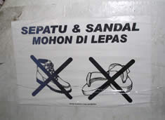
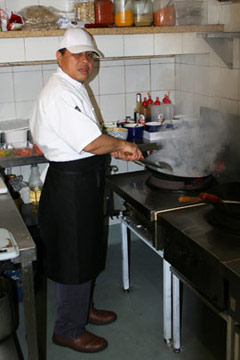

Pertanyaan bentuk pasif
 Dari Dewi:
Dari Dewi:
| 
Reproduced with the permission of Laura Lochore. |
Brendon katanya perlu berlatih lagi kalimat pasif, ya? Ok, deh, ini beberapa kalimat yang mungkin akan ditanya pada saat diwawancara. Tahukah Brendon yang mana bentuk pasif dan yang mana kalimat aktif? Ini sudah saya rekam untuk latihan Brendon. |
Dengarkanlah cuplikan audio dan tentukanlah apakah pertanyaan bentuk pasif atau bentuk aktif. Download the worksheet for this exercise. AUDIO CD: Track 5++ Need Flash Plug-in |
 |
Komentar
 Re: Pertanyaan bentuk pasif, dari Ibu_Indah pada jam 17:42.
Re: Pertanyaan bentuk pasif, dari Ibu_Indah pada jam 17:42.
You can improve your Indonesian by practising responding to these questions aloud. Doing it in your head won’t help get your tongue around the words!
 |